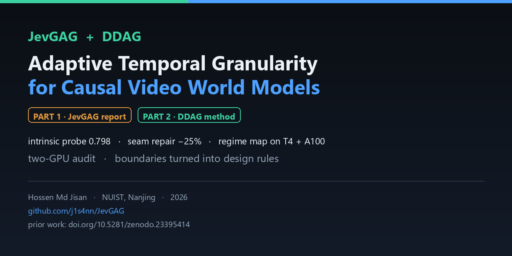
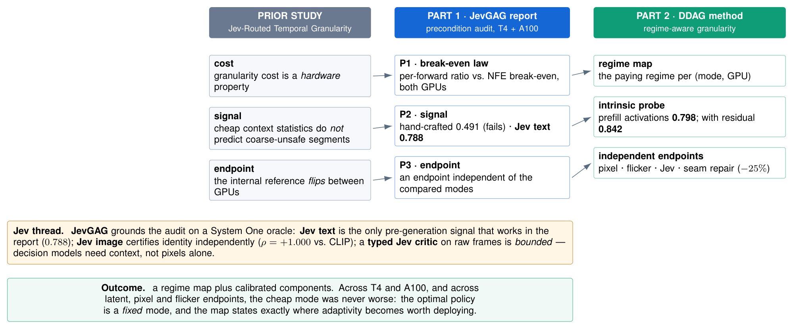
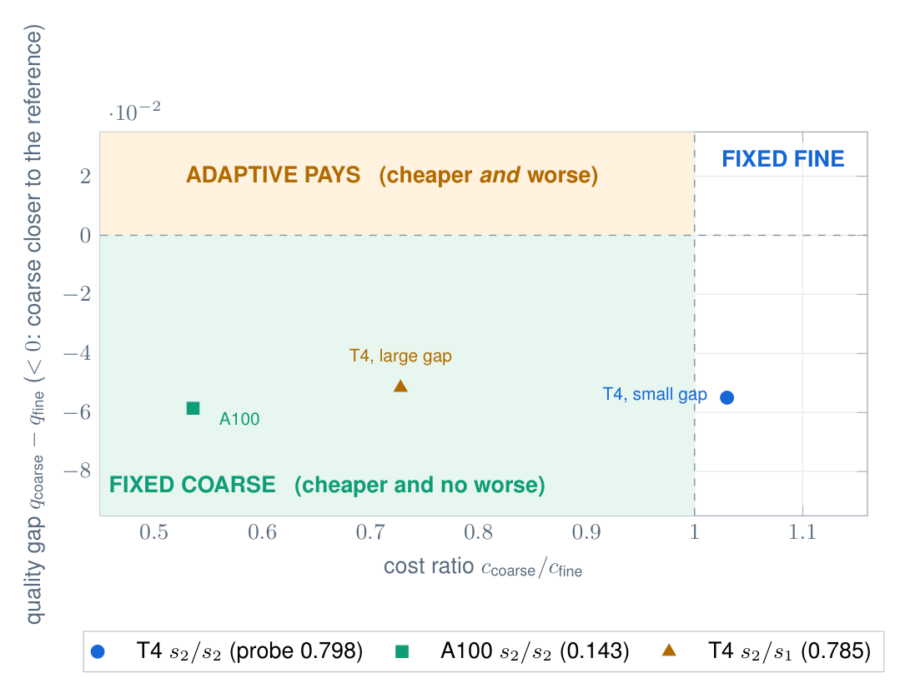
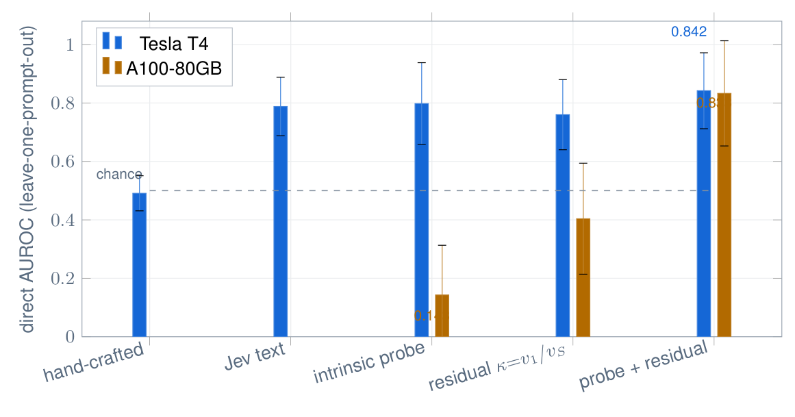
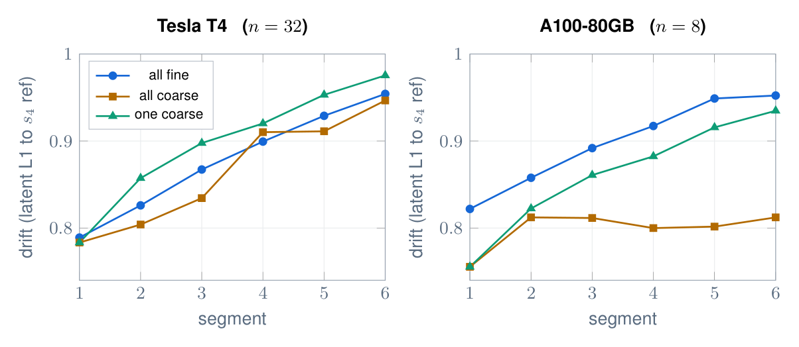
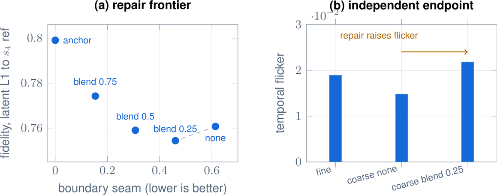

Research · Causal Video World Models
Adaptive Temporal Granularity for Causal Video World Models
A two-part programme: an audit of the preconditions that adaptive granularity silently assumes, and a regime-aware method that turns them into a deployable rule — measured on T4 and A100 across latent, pixel and flicker endpoints.
Prior work
This programme builds directly on the earlier study:
Hossen Md Jisan. Jev-Routed Temporal Granularity with Recovery and Hysteresis for Causal Video Generation. Preprint, 2026. https://doi.org/10.5281/zenodo.23395414
That study framed adaptive granularity as resting on three preconditions — cost, signal and endpoint — and found the trade-off to be conditional. This repository audits those preconditions, then turns them into a rule.
The programme in one figure

Part 1 · JevGAG — the report
A measured audit of the three preconditions on two GPUs, with a matched design, an independent endpoint protocol and a claim-to-artifact audit.
The same mode pair sits on opposite sides of the NFE break-even inequality on T4 and A100.
Cheap context statistics reach only 0.491 AUROC; an off-device Jev text oracle reaches 0.788.
The internal reference flips between GPUs, so an endpoint independent of the compared modes is mandatory.
Also established: hysteresis + forced recovery stabilise switching, and a measurable seam appears at every switch boundary. → jevgag/
Part 2 · DDAG — the method
Deadline- and Drift-Aware Granularity turns the preconditions into a regime map plus calibrated components, each validated by its own experiment.
0.798 AUROC from the generator's own prefill activations — no external oracle.
0.752 on T4; probe + residual = 0.842, the strongest signal in the programme.
A 25% latent blend cuts the seam 25% and improves fidelity — training-free.
Adaptivity pays only when the cheap mode is cheaper and worse.
→ ddag/ (eleven numbered experiments)
Figures




Achieved · boundary · open
Every earlier limitation is recorded as a boundary — a measured limit of the naive formulation — and each either has a resolution or defines the next experiment.
Weak context signals (0.491) → intrinsic probe 0.798; the switch seam → training-free repair −25%.
Drift propagation: real on T4, linear, and not predictable from the policy.
Signals do not transfer across GPUs (0.798 → 0.143); a context-free Jev critic is at chance; the repair trades seam for flicker.
The honest headline: across two GPUs and every endpoint measured, the cheap mode was never worse — so the optimal policy is a fixed mode, and the map states exactly where a router becomes worth deploying.
Data & artifacts (public)
Every result, figure and media bundle is published on Kaggle. Nothing is private except the API-key store. Each dataset ships a README and metadata; every headline number re-derives from a stored result file.
| Dataset | Contents | Size |
|---|---|---|
| DDAG — all experiments (consolidated) | results of experiments 01–11 + publication figures (PDF + PNG) | 59 MB |
| DDAG — matched granularity frames | 54 decoded frames: fine / coarse / seam-repaired, matched boundary + noise, plus the composed grid | 28 MB |
| JevGAG report — audited results | the report's results (E1–E9) + figures | 0.4 MB |
| JevGAG report — result videos | rendered rollout videos for the report's policy arms | 412 MB |
| JevGAG report — result figures | figure bundle for the report | 13 MB |
| Intrinsic probe (exp 01) | DiT activations + probe results | 11 MB |
| Seam repair (exp 02) | boundary-seam measurements + repair ablation | 0.06 MB |
| Closed-loop evidence (exp 03) | intrinsic prior + free post-generation evidence | 11 MB |
Backbone / reproducibility assets (used by the kernels, not results): causal-rcm-ckpts (13 GB) · wan21-causal-rcm-matched (4.4 GB).
Full results
More detail than the manuscript. Confidence intervals are prompt-grouped bootstrap; AUROCs use leave-one-prompt-out cross-validation grouped by prompt.
Signals for coarse-unsafe segments (direct AUROC)
| signal | Tesla T4 | A100-80GB | notes |
|---|---|---|---|
| chance | 0.500 | 0.500 | reference |
| hand-crafted context statistics | 0.491 | — | preregistered formulation; fails |
| Jev text oracle (prior report) | 0.788 | — | off-device, 0.672 s/decision |
| intrinsic prefill probe | 0.798 [0.639, 0.916] | 0.143 [0.018, 0.368] | inverts on A100 |
convergence residual v1/vS | 0.760 [0.629, 0.870] | 0.404 [0.223, 0.603] | p = 0.000 on T4 |
reciprocal vS/v1 (first guess) | 0.240 [0.130, 0.371] | 0.596 | inverted — the sign must be measured |
| probe + residual (multi-feature) | 0.842 [0.680, 0.938] | 0.833 [0.605, 0.971] | the only signal that transfers |
first-step magnitude v1 | 0.710 [0.487, 0.855] | 0.633 | strongest single residual |
| naive final-step residual | 0.662 | 0.683 | weaker than the ratio |
Cost (DiT seconds per segment, wall-clock, synchronised)
| operating point | fine | coarse | ratio | break-even | cheaper? |
|---|---|---|---|---|---|
| T4, fine s2 / coarse s2 | 4.394 | 4.526 | 1.030 | 2.33 | no |
| T4, fine s2 / coarse s1 | 4.686 | 3.411 | 0.728 | 4.08 | yes (−27%) |
| A100, fine s2 / coarse s2 | 1.279 | 0.685 | 0.536 | 2.33 | yes (−46%) |
Quality by endpoint (lower is better)
| endpoint | T4 fine | T4 coarse | A100 fine | A100 coarse |
|---|---|---|---|---|
| latent L1 to s4 reference | 0.807 | 0.752 | 0.780 | 0.721 |
| decoded-pixel L1 | 0.2686 | 0.2511 | — | — |
| temporal flicker | 0.0254 | 0.0213 | — | — |
Seam repair (T4, 32 matched segments)
| variant | boundary seam | fidelity | temporal flicker |
|---|---|---|---|
| none | 0.614 | 0.761 | 0.0148 |
| blend 0.25 | 0.460 (−25%) | 0.754 | 0.0218 |
| blend 0.50 | 0.307 | 0.759 | — |
| blend 0.75 | 0.153 | 0.774 | — |
| anchor (hard) | 0.000 | 0.799 | — |
| fine (no switch) | 0.215 | 0.807 | 0.0189 |
Drift propagation (81 frames, 6 segments)
| GPU | chain | drift trajectory (segments 1 → 6) |
|---|---|---|
| T4 (n=32) | all fine | 0.789 0.826 0.867 0.899 0.929 0.954 |
| T4 (n=32) | all coarse | 0.783 0.804 0.834 0.910 0.911 0.947 |
| T4 (n=32) | one coarse, then fine | 0.783 0.857 0.898 0.920 0.953 0.975 |
| A100 (n=8) | all fine | 0.822 0.858 0.892 0.917 0.949 0.952 |
| A100 (n=8) | all coarse | 0.756 0.812 0.812 0.800 0.802 0.812 |
Propagation on T4 (one-coarse minus all-fine), 95% CIs: seg 2 +0.0313 [+0.010,+0.052] · seg 3 +0.0304 [+0.009,+0.051] · seg 4 +0.0208 [+0.000,+0.042] · seg 5 +0.0241 [+0.003,+0.045] · seg 6 +0.0212 [−0.004,+0.046] — significant at four of five tail segments. On A100 the coarse chain lies below the fine chain.
Policies (the regime map)
| operating point | policy | DiT total (s) | quality | verdict |
|---|---|---|---|---|
| T4, s2/s2 | fixed fine | 281.2 | 0.807 | dominant |
| T4, s2/s2 | fixed coarse | 289.6 | 0.752 | dearer |
| T4, s2/s1 | fixed coarse | 218.3 | 0.755 | dominant |
| A100, s2/s2 | fixed coarse | 43.9 | 0.721 | dominant |
Jev critic and error-propagation model
| Jev question (T4, 64 segments) | AUROC | 95% CI | perm p |
|---|---|---|---|
discontinuity | 0.497 | [0.359, 0.644] | 0.520 |
plausible | 0.514 | [0.372, 0.648] | 0.417 |
| error-propagation model | T4 R² | A100 R² |
|---|---|---|
| persistence | 0.905 | 0.865 |
| current drift only | 0.944 | 0.891 |
| increment from policy/position | 0.008 | 0.077 |
Cite
@software{hossen2026jevgagddag,
title = {JevGAG + DDAG: Adaptive Temporal Granularity for Causal Video World Models},
author = {Hossen, Md Jisan},
year = {2026},
url = {https://github.com/j1s4nn/JevGAG}
}